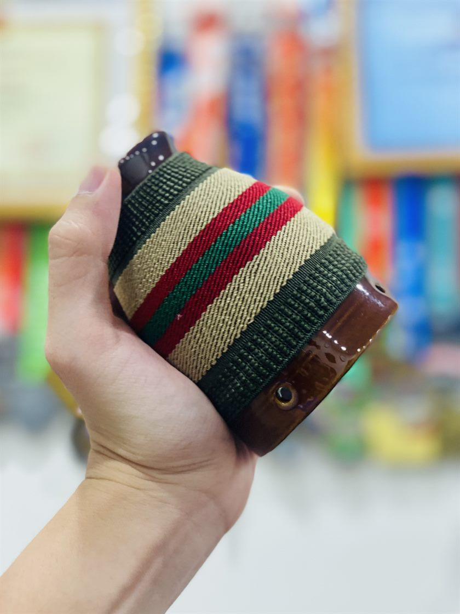

Con mình được 7 tháng, ngày càng lớn, ông bà nội phải xuống ở cùng để phụ trông cháu. Xuống được vài hôm thì bà bắt đầu kêu đau lưng.
Bế cháu cả ngày, lúc ru ngủ, lúc dỗ khóc, rồi cứ cúi lên cúi xuống mãi, cái lưng vốn đã không còn khỏe cứ thế đau dần. Bà cố chịu, không than, đến lúc đau nhiều mới nói với mình.
"Yêu bối, Ủy Trung cầu"
Mình dùng bộ huyệt Tam Yêu Châm: Thận du, Đại trường du, Ủy trung, thêm vài điểm A thị tại chỗ — đúng với câu "Yêu bối, Ủy Trung cầu" trong Y học cổ truyền.
Kim vào rồi, mình định bật đèn hồng ngoại để làm ấm lưng như vẫn thường làm. Nhưng bà lại bảo: "Mẹ hợp cứu ngải hơn".
"Cái ấm rất khác"
Bà bảo cứu ngải có cái ấm rất khác. Nhiệt không chỉ nằm trên bề mặt da mà cho cảm giác ấm sâu, dịu và dễ chịu. Cái ấm ấy lưu lại lâu hơn, không có cảm giác nóng rát như khi dùng đèn.
Chỉ có một vấn đề: mùi ngải.
Chuyện cái mùi, và cái cốc
Ngải cháy trong phòng mà mùi thơm đã bay ra tận cửa thang máy vẫn còn ngửi thấy. Mình dùng loại ngải cứu đã ủ nhiều năm, cháy khá êm và đỡ khét hơn loại thông thường, nhưng đã đốt ngải thì khó tránh khỏi mùi.

Thế là mình hướng dẫn bà dùng cốc cứu ngải. Ngải được đốt trong cốc, phần khói được giữ và dẫn xuống bên trong nên mùi khét giảm đi khá nhiều, trong khi hơi ấm vẫn được lưu lại và truyền xuống vùng huyệt. Vừa đỡ ám mùi cả phòng, vừa giữ được cái ấm mà bà thích.
Bà cười: "Khét một tí cũng được, miễn là đỡ".
Hóa ra không chỉ là cảm giác
Hôm nay ngồi nghỉ, xem lại kỉ yếu Đại hội châm cứu quốc tế 2026 tại Thuỵ Sĩ hôm vừa rồi. Có một vài báo cáo về đặc tính vật lý và hóa học của cứu ngải, mình lại nhớ đến câu nói của bà.
Hóa ra cái cảm giác "ấm rất khác" mà bà cảm nhận không chỉ đơn thuần là cảm giác. Nhiệt từ ngải cứu khi cháy có những đặc tính bức xạ riêng, đồng thời quá trình đốt ngải còn tạo ra các sản phẩm hóa học khác với một nguồn nhiệt thông thường.
Vì sao cái cũ vẫn còn đó
Có lẽ cũng vì thế mà cứu ngải tồn tại qua hàng nghìn năm, dù y học ngày nay đã có rất nhiều thiết bị tạo nhiệt hiện đại. Nó không đơn giản là đốt cho nóng, mà là một kỹ thuật có chiều sâu: từ nguyên liệu, cách chế biến ngải, cách tạo nhiệt đến vị trí và thời gian tác động, tất cả đều có lý do riêng.
Đôi khi, một phương pháp cũ không tồn tại lâu đến vậy chỉ vì người ta chưa tìm được thứ gì mới hơn. Mà có thể bởi vì, đến một mức độ nào đó, cái mới vẫn chưa thay thế được hoàn toàn những gì cái cũ làm tốt.